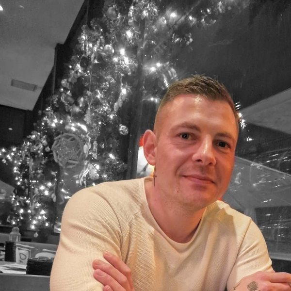

Hallo, ich bin Steffen.
Auszubildender zum Pflegefachmann, digital unterwegs und überzeugt von diesem Beruf.
Meine Geschichte
Ich mache die Ausbildung zum Pflegefachmann, weil ich überzeugt bin, dass Pflege zu den wichtigsten Berufen gehört. Man hilft Menschen mit ganz unterschiedlichen Einschränkungen, und oft reichen einfache Dinge: ein nettes Gespräch oder ein kleines Lächeln.
Mein Lieblingsthema sind Menschen mit demenziellen Veränderungen. Darüber möchte ich in Zukunft viel schreiben.
Was ich vorhabe
Nach der Ausbildung möchte ich Pflege studieren und mich weiterbilden, weil ich etwas bewirken will. Deshalb arbeite ich schon jetzt wissenschaftlich: Quellen belegen, sauber ordnen und kennzeichnen.
Alles digital
In meiner Klasse bin ich einer der wenigen, die alles ausschließlich digital machen. Kein Ordner, keine Bücher, keine Hefte. Alles in einem MacBook, alles an einem Ort. Mehr Wissen und mehr Unterlagen, bei gleichbleibendem Gewicht.
Mein Versprechen: Ich nenne keine Bewohner, keine Mitarbeitenden, keine Schule und keinen Arbeitgeber. Alles, was ich teile, ist meine eigene Erfahrung.